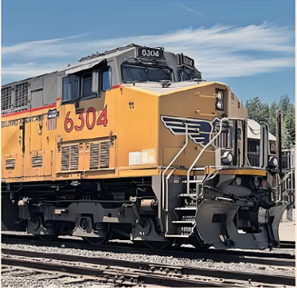

ROBERT WRIGHT — LONDON

When Jim Vena, chief executive of Union Pacific, announced last Thursday that the US’s biggest railway had made significant progress in talks on merging with another network, he used deceptively humdrum language.
The company was “in advanced talks” with Norfolk Southern, the US’s fourth-biggest railway, about a “potential business combination”, he told participants in the company’s second-quarter results conference call.
Yet to observers and analysts of freight railways in the US and Canada, Union Pacific’s plans are far more than just another “business combination”. A successful deal would destroy the widespread assumption that big Canadian and US railways — which handle about 40 per cent of intercity freight movements — had become so consolidated that regulators would block any new attempted merger.
A $200bn combination of Union Pacific — which operates west of the Mississippi — and Norfolk Southern, on the east, would be the first operator in US railways’ 200-year history able to carry goods all the way from the Pacific coast to the Atlantic on its own tracks.
The deal could prompt BNSF, the other big western railway, owned by Warren Buffett’s Berkshire Hathaway, to consider a tie-up with CSX, the other big network in the east, according to many analysts.
Tony Hatch, an independent analyst, said the talks had surprised an industry that stopped expecting new deals after Canadian Pacific bought Kansas City Southern in 2023. “The thinking was that this would be the last merger,” Hatch said. “All of a sudden, there’s been a revival of interest.”
Henry Posner, a veteran rail investor and chair of the Iowa Interstate Railroad, said there could still be considerable opposition from customers to the creation of a behemoth with the power that a transcontinental railway would wield. “At the industry level, it’s hard to imagine a constituency that’s anxious to see a transcontinental railroad merger,” he said.
The big question is whether industry regulator the Surface Transportation Board has changed sufficiently under US President Donald Trump to brush aside precedent and clear a deal.
Another question is whether it would approve a “voting trust”, a key mechanism that in past US rail mergers has allowed shareholders in a target company to sell up and avoid the risks of the STB’s laborious approval process, which typically takes at least 18 months.
At a conference in May, Keith Creel, chief executive of the merged Canadian Pacific Kansas City, pointed out that any new deal would take place under tough rules introduced in 2001 that required any transaction to “enhance competition”. Those rules did not apply to the 2023 deal because Kansas City Southern had an exemption.
“There is... not a hill of regulatory risk to climb,” Creel said. “There’s mountains of regulatory risk.”
Nevertheless, Union Pacific’s advisers appear confident a deal is possible. Vena has used language apparently calculated to appeal to Trump's economic nationalism. In an interview with industry magazine Trains, published in May before the Norfolk Southern talks became public, Vena said: “I think it’s a win for our customers and a win for competition, and it’s a win for how the country should move ahead.”
Advocates for a merger have argued that creation of a single transcontinental railway would improve the industry’s structure. There are two big western networks, two big networks in the east, and CPKC and Canadian National competing in Canada and parts of the US. Long-distance freight often has to be handed over between operators, frequently in Chicago, which becomes congested at busy times.
Hatch said there was also potential for a merged rail network to make a better job of handling “watershed” traffic from the areas near the Mississippi that needed to go relatively short distances.
Yet even if it approves a merger, the STB could still demand in return that a network sell some of its routes to a rival or allow another operator to use parts of its track.
Hatch pointed out in a note to clients this week that any merger might face opposition from large customers worried that a merged network would enjoy far more power to raise prices.
Posner, who sits on a committee advising the STB on passenger rail issues, insisted there was no certainty the regulator would bend with the political wind. The board has a Republican chair but only one other Republican member, alongside two Democrats and a vacant seat. “I think the STB is somewhat removed from political pressure,” Posner said.
On top of the approval concerns, there is a strong chance the regulator might bar the use of a “voting trust”. In past rail mergers, shareholders in the selling company have sold their shares to an independent entity which has overseen the railroad’s operations during the 18 months to two years that the STB takes to consider a deal.
Canadian National failed in a counterbid to Canadian Pacific’s offer for Kansas City Southern, partly because the regulator barred it from using a voting trust. Hatch said that, without the trust structure, shareholders would face an unattractive period of uncertainty.
It remains possible, according to analysts, that Union Pacific will navigate the many challenges and succeed in its bid to reshape US freight rail’s competitive landscape.
Yet Hatch stressed that there remained considerable uncertainties. “We've long thought that the risk and the cost would overwhelm the benefits,” Hatch said of a potential deal. “It appears that Union Pacific now think they have a handle on that and they can pull off enough benefit to make the risks worth it.”